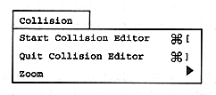
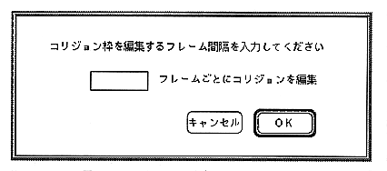
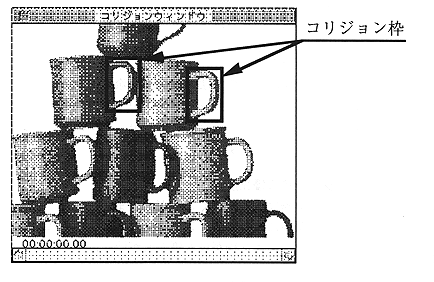

Start Collision Editor
To create a collision frame, select an object in the object window and select “Start Collision Editor”. When a movie object is selected, the dialog box for setting the interval opens. Set the interval for creating the collision frame (Figure 2.11). The minimum value of the interval is 1 frame. At this time, a collision frame can be created at 1/30 second intervals. By setting the interval value according to the movie frame rate, a collision frame can be created for each movie frame.

The collision editor window will open. Create a collision frame using the Tool menu (Figure 2.12).

Quit Collision Editor
After creating the collision frame and setting the action for the object, select “Quit Collision Editor” to close the collision editor window.